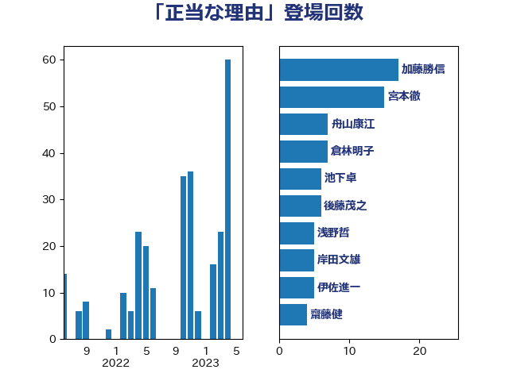

単語「正当な理由」

| 加藤勝信 | 自由民主党 | 17 回 |
| 宮本徹 | 日本共産党 | 15 回 |
| 舟山康江 | 国民民主党 | 7 回 |
| 倉林明子 | 日本共産党 | 7 回 |
| 池下卓 | 日本維新の会 | 6 回 |
| 後藤茂之 | 自由民主党 | 6 回 |
| 浅野哲 | 国民民主党 | 5 回 |
| 岸田文雄 | 自由民主党 | 5 回 |
| 伊佐進一 | 公明党 | 5 回 |
| 齋藤健 | 自由民主党 | 4 回 |
| 西村康稔 | 自由民主党 | 4 回 |
| 田村憲久 | 自由民主党 | 4 回 |
| 本田顕子 | 自由民主党 | 4 回 |
| 本村伸子 | 日本共産党 | 4 回 |
| 山添拓 | 日本共産党 | 4 回 |
| 井出庸生 | 自由民主党 | 4 回 |
| 鈴木庸介 | 立憲民主党 | 3 回 |
| 田名部匡代 | 立憲民主党 | 3 回 |
| 牧野たかお | 自由民主党 | 3 回 |
| 古屋範子 | 公明党 | 3 回 |
| 井上哲士 | 日本共産党 | 3 回 |
| 高良鉄美 | 無所属 | 2 回 |
| 舩後靖彦 | れいわ新選組 | 2 回 |
| 羽生田俊 | 自由民主党 | 2 回 |
| 福島みずほ | 社会民主党 | 2 回 |
| 田島麻衣子 | 立憲民主党 | 2 回 |
| 柴山昌彦 | 自由民主党 | 2 回 |
| 東徹 | 日本維新の会 | 2 回 |
| 星北斗 | 自由民主党 | 2 回 |
| 斉藤鉄夫 | 公明党 | 2 回 |
| 広瀬めぐみ | 自由民主党 | 2 回 |
| 小倉將信 | 自由民主党 | 2 回 |
| 古庄玄知 | 自由民主党 | 2 回 |
| 友納理緒 | 自由民主党 | 2 回 |
| 三浦信祐 | 公明党 | 2 回 |
| 高橋千鶴子 | 日本共産党 | 1 回 |
| 長浜博行 | 無所属 | 1 回 |
| 鈴木敦 | 国民民主党 | 1 回 |
| 鈴木宗男 | 日本維新の会 | 1 回 |
| 野田聖子 | 自由民主党 | 1 回 |
| 遠藤良太 | 日本維新の会 | 1 回 |
| 葉梨康弘 | 自由民主党 | 1 回 |
| 羽田次郎 | 立憲民主党 | 1 回 |
| 米山隆一 | 立憲民主党 | 1 回 |
| 稲津久 | 公明党 | 1 回 |
| 福島伸享 | 無所属 | 1 回 |
| 石井準一 | 自由民主党 | 1 回 |
| 田村智子 | 日本共産党 | 1 回 |
| 猪瀬直樹 | 日本維新の会 | 1 回 |
| 清水真人 | 自由民主党 | 1 回 |
| 浦野靖人 | 日本維新の会 | 1 回 |
| 浜地雅一 | 公明党 | 1 回 |
| 河西宏一 | 公明党 | 1 回 |
| 森屋隆 | 立憲民主党 | 1 回 |
| 柚木道義 | 立憲民主党 | 1 回 |
| 本田太郎 | 自由民主党 | 1 回 |
| 岩谷良平 | 日本維新の会 | 1 回 |
| 岡本あき子 | 立憲民主党 | 1 回 |
| 山口壯 | 自由民主党 | 1 回 |
| 尾辻秀久 | 無所属 | 1 回 |
| 小野田紀美 | 自由民主党 | 1 回 |
| 室井邦彦 | 日本維新の会 | 1 回 |
| 大島九州男 | れいわ新選組 | 1 回 |
| 大口善徳 | 公明党 | 1 回 |
| 伊藤岳 | 日本共産党 | 1 回 |
| 伊波洋一 | 無所属 | 1 回 |